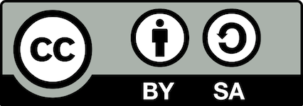

Webbutveckling kan vara ett väldigt krångligt ämne som många nybörjare kan ha problem med att sätta sig in i, men även de som har erfarenhet kan ibland stöta på problem.
Därför existerar nu denna sida för att kunna guida webutvecklaren genom de tre S-en. Klicka på ett "S" och sätt igång!
Standardiserad?
Att skapa sidor kräver att man följer de standarder och förväntningar som internet har. Följer du dem?
Upphovsrätt
Med ett par undantag får du inte använda andras intellektuella egendom så som bilder, texter, namn och dylikt som kan vara täckt under trademarks till vad som helst. Det är särskilt problematiskt om det innefattar någon form av monetär vinst. Exempelvis kan du inte skapa en butikshemsida som är fullproppad av loggor från Star Wars medans "Let it go" spelas på högsta volym och klipp från "The Avengers" spelas i bakgrunden. Musse pigg är läskig när han är arg...
Vilka är då dessa undantag som kan skydda dig från en väldigt arg mus med ett baseballträ? Det lättaste sättet är att helt enkelt skapa och använda din egna intellektuella egendom med trademarks. Är du dock som de flesta och inte orkar med sånt bök så finns det lättare sätt för dig att använda bra material för din sida. En väldigt viktig lag som existerar i nästan alla länder: fair use. Denna lag säger att om du fyller upp ett eller flera kriterier så får du bruka andras trademarks för att tjäna pengar så som för recensioner, parodier m.m.
Vad du får och inte får göra med andras intellektuella egendom beror dock också på vilken sort av licens den är kopplad till. Creative Commons (CC) är ett populärt sätt att licensera sin egendom för medium- och småskaliga instanser som amatörkonstnärer som delar med sig av sina verk på nätet. För att visa att den är täckt av CC finns det en liten grå låda som du kan sätta en serie med olika symboler i. Symbolerna definierar exakt vad du får och inte får göra med verket t.ex tjäna pengar, dela utan att "credda" eller ändra något.
Det är också värt att påpeka att intellektuell egendom slutar vara täckt av upphovsrätten efter ett visst antal år efter ägarens död och blir då vad som kallas "public property" vilket innebär att vem som helst får använda det hur de vill. Historien om frankensteins monster eller Mona Lisa är exempel på detta.
Du KAN komma undan med att ta andras trademarks utan tillåtelse utan att de kommer bry sig överdrivet mycket om du är tillräckligt liten och obetydlig, men det är inte en risk du vill ta. Om de bestämmer sig för att just du ska få smaka på lite juridisk rättvisa så kommer det svida i plånboken. Just hur rabiat ett företag är när det gäller att skydda sin upphovsrätt varierar mellan olika länder och företag. Vissa länder, som Sverige, har relativt simpla trademark-lagar, men i t.ex USA så MÅSTE ett företag skydda sin licens aggresivt, annars blir den automatiskt "public property" eftersom lagen då anser att de uppenbarligen inte bryr sig om sin egendom tillräckligt mycket för att försvara den.
I slutändan är det upp till dig som webbutvecklare att säkerhetsställa att du får använda materialet som finns på hemsidan baserat på vilken licens som täcker det.
PUL och GDPR
Personuppgifter är en väldigt känslig sak att hantera eftersom rätten att vara privat inte är något man vill trampa på. Därför fanns det tills nyligen "Personuppgiftslagen" (PUL) som gav riktlinjer till vad du fick göra med användares personuppgifter och vad du var tvungen att berätta för dem. Den blev nyligen utbytt med "General data protection regulation" (GDPR) som för det mesta är små korrigeringar för att täppa till diverse kryphål. En viktig ändring är dock att man som utvecklare nu är mycket mer ansvarig för den informationen man samlar in och att se till att den hanteras på rätt sätt. Användare har nu dessutom betydligt större rätt till att få veta vad du använder deras info till och varför. Utöver detta har de lättare att be dig radera deras personliga information.
Standarder
Följer du de standarder som de flesta sidorna brukar? W3C är en bra sida att bruka när du vill säkerställa att din egna sida är vettigt sammansatt. Den innehåller sammanfattningar och guider runt vad standerader är, vilka som finns och varför. Internets standarder är många och blandade, men bland de viktigare att hålla koll på är följande:
- Är din kod semantisk? Är den strukturerad och lätt att förstå sig på för den som tittar på den?
- Är din sida anpassad för olika apparater? Finns det en mobilversion av den?
- Kom du ihåg att sätta in funktionalitet för "voice browsing"? Det är livsviktigt för vissa delar av samhället.
- Fungerar sidan med alla eller åtminstone de flesta av de större webläsarna? Internet explorer och Edge är bra att ha funktionalitet för, men ingen klandrar dig ifall sidan inte har det. Chansen att någon ens använder den webbläsaren tillräckligt länge för att märka det är minst sagt låg
- Hur är färgerna på dina sida? Är kontrasten stor nog för att kunna urskilja separata objekt
Varför har vi då standarder och vad skulle hända utan? För det vill jag dra en paralell till SVID (Svensk industristandard). Det är en, som namnet hävdar, standard som används i många aspekter av industri. Detta är för att om du arbetar med maskiner på en fabrik ska du kunna gå till en annan och med minimal inlärning kunna arbeta med deras också. Utan en standard måste man lära sig hur varje individuell sida funkar för sig vilket slösar tiotals om inte hundratals timmar i månaden för både företag och amatörer.
Schysst?
Är du schysst? Det är klart du är, men är din sida det också?
Konceptet med schyssthet på internet är inte nödvändigtvis detsamma som den du kanske tänker på. I första hand handlar det om anpassning för vem som kommer gå in på sidan. Till exempel är denna sida anpassad för just dig, den tillbakalutade webbutvecklaren. Om du är en hemsida som har barn som målgrupp är det i ditt intresse att designa sidan efter det. Färg, bild och språk ska vara på ett sätt som drar in läsaren och får dem att känna sig välkommna och bekväma.
Låt mig förklara med ett exampel: Du har fått jobbet att skapa en ny sida för barnkanalen. Detta är vad du INTE ska göra:
- Mörka och påtryckande färger
- En svårläst font som "Times new roman" eller "Zaphino"
- Bild, video och ljud som kan göra unga besökare obekväma eller rädda
- Allt för akademiskt språk och/eller svordomar, förolämpningar och annat som inte känns inbjudande för barn i målgruppens ålder.
Vad borde du då göra istället för att skapa en trevlig plats för barn att besöka?
- Ljus och färgstark ton exempelvis pastellfärger
- En lättläst font så som "Arial" eller "Comic sans" (ta inte denna om du kan undvika det. You know why...)
- Glada och uppmuntrande bilder och videor. Tillfredställande ljud.
- Enkelt och lättförstått språk med en glad ton. Barnen ska känna att de nästan pratar med ett ideellt annat barn.
Utöver detta måste man också inse att på många sidor är det inte bara du som kan göra saker. Har du kommentarsfält till exempel? Har det några regler eller moderering? Om du vill skapa en inbjudande och positiv kultur kan det vara en bra idé att sätta upp specifika regler kring vad folk inte får säga i kommentarerna så som svordomar, förolämpningar, hot, whatever. Moderering är dock inte en objektivt bra sak. För stor begränsning av yttrandefrihet kommer inte ge sidan ett bra rykte. Folk måste få säga vad de tycker, även om du inte gillar det.
Slutligen bör du ha i åtanke hur du hanterar besökares information. Med de nya restriktionerna (GDPR, mer finns att läsa i standard) så är du mer ansvarig för vad du gör med den informationen du samlar in från användarna.
Säker?
Känner du dig säker just nu?